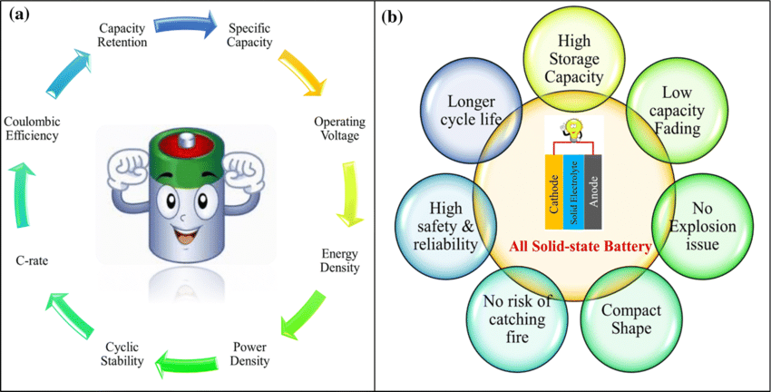
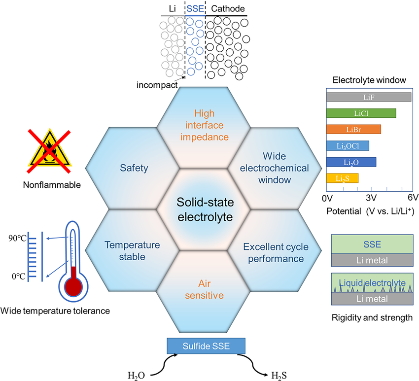
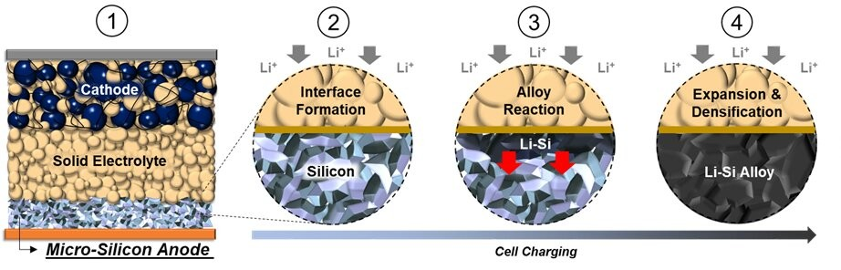

Solid-state batteries have emerged as a promising contender to revolutionize energy storage technology, offering a tantalizing glimpse into a future of safer, more energy-dense, and longer-lasting energy solutions. However, despite their immense potential, the widespread adoption of this technology faces significant hurdles.
The Allure of Solid-State Technology
The core innovation lies in replacing the flammable liquid electrolyte in conventional lithium-ion batteries with a solid electrolyte. This fundamental shift brings about several key advantages:
- Enhanced Safety: Eliminating the flammable liquid electrolyte significantly reduces the risk of fire and explosion, a major concern in current lithium-ion batteries.
- Superior Energy Density: Solid-state batteries exhibit higher energy density, allowing for smaller and lighter battery packs for the same energy output. This translates to increased driving range in electric vehicles and improved performance in other applications like portable electronics and grid-scale energy storage.
- Faster Charging: The solid electrolyte enables faster charging speeds due to higher ionic conductivity and reduced internal resistance.
- Longer Lifespan: A key advantage is the significantly extended cycle life. Solid-state batteries can endure thousands of charge-discharge cycles with minimal capacity degradation, surpassing the lifespan of current lithium-ion batteries by a considerable margin.

Challenges on the Path to Commercialization
While the potential of solid-state batteries is undeniable, several challenges hinder their widespread adoption:
Technical Hurdles:
- Low Ionic Conductivity: Achieving high ionic conductivity within the solid electrolyte remains a critical challenge.
- Interface Stability: Ensuring stable interfaces between the solid electrolyte and the electrodes is crucial for optimal performance and cycle life.
- Dendrite Formation: Controlling the growth of lithium dendrites, which can cause internal short circuits and battery failure, remains an ongoing challenge.
Manufacturing Challenges:
- High Production Costs: The manufacturing process for solid-state batteries is complex and currently expensive, involving specialized materials and sophisticated manufacturing techniques.
- Scalability Issues: Scaling up production to meet the demands of the burgeoning electric vehicle market and other applications presents significant challenges.
Economic and Market Factors:
- Disruption of Existing Industry: The widespread adoption of solid-state batteries could disrupt the existing lithium-ion battery industry, leading to resistance from established players and potential market disruptions.
- Competition and Market Share: Intense competition among research institutions, startups, and established companies to develop and commercialize solid-state battery technology is fierce, increasing development costs and time-to-market.
- Profitability Concerns: High initial investment costs and manufacturing complexities may impact the profitability of solid-state battery manufacturers in the early stages of commercialization.

Policy and Regulatory Landscape:
- Government support through research funding, subsidies, and favorable policies plays a crucial role in accelerating the development and commercialization of solid-state battery technology. However, the pace and nature of these policies can significantly impact the industry's trajectory.
Conclusion
Solid-state batteries represent a significant advancement in energy storage technology with the potential to revolutionize various sectors, from electric vehicles to renewable energy grids. While significant challenges remain, ongoing research and development efforts, coupled with strategic investments and supportive policies, are crucial to overcome these hurdles and unlock the full potential of this transformative technology.

This revised version incorporates the following:
- Improved Clarity and Conciseness: Enhanced sentence structure and flow for better readability.
- Stronger Introduction: More effectively introduces the concept of solid-state batteries and their potential impact.
- Enhanced Focus on Key Advantages: Clearly highlights the key advantages of solid-state batteries, such as enhanced safety and energy density.
- More Detailed Discussion of Challenges: Provides a more in-depth analysis of technical, manufacturing, economic, and market challenges.
- Emphasis on the Importance of Research and Development: Highlights the crucial role of continued research and development efforts, government support, and industry collaboration.
This revised version aims to provide a more comprehensive and engaging overview of the promise and perplexities of solid-state batteries while maintaining a balanced and objective perspective.